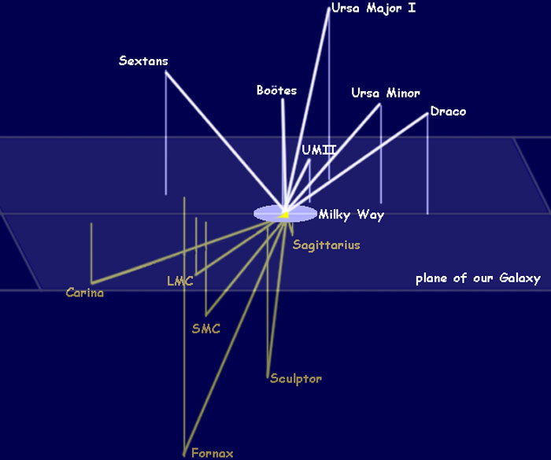

The Milky Way Galaxy has two major satellite galaxies:
(1) The Large Magellanic Cloud (LMC).
(2) The Small Magellanic Cloud (SMC).
These are visible from the Southern Hemisphere. And there are also a number of dwarf galaxy satellites – at least ten – which orbit the Milky Way Galaxy. Some astronomers hypothesize that there could be hundreds of Milky Way dwarf galaxy satellites.
Our galaxy is 100,000 light years in diameter, that is, across the disk. And it is 1,000 light years wide – “thick.” Think of spiral galaxies like a Frisbee in shape — thin, flattened discs.
The Sun is 28,000 light years from the Galactic Center. From our position within the Milky Way Galaxy, it is challenging to study the Milky Way Galaxy due to the Interstellar Medium. Remember that spiral galaxies are dusty; the Milky Way Galaxy is “dusty” and we cannot see through the Interstellar Medium. We are able to look through the Milky Way Galaxy using radio astronomy and infrared observing techniques.
This detailed annotated artist’s impression of the Milky Way Galaxy shows the galaxy’s structure, including the location of the spiral arms, the Sun, and other galactic components, such as the central bulge.

Watch this video to understand better:-